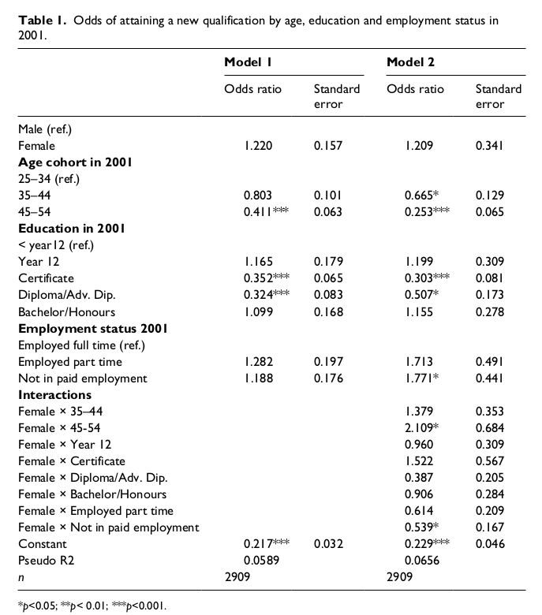

Data Preparation¶
This notebook contains the code to generate the base datasets for later estimation. Steps include;
Removing people who do not meet the inclusion criteria (age at wave1, present in both intial and final wave).
Computing treatment and outcome variables.
Removing features that are deemed to be proxies for the treatment variable
Removing columns that are ids or otherwise deemed irrelevant.
Optional unsupervised feature selection (with respect to the treatment/target) feature selection to produce smaller datasets and reduce the issue of correlated features.
import numpy as np
import pandas as pd
import matplotlib.pyplot as plt
import pyreadstat
import re
import string
#from sklearn_pandas import DataFrameMapper
import networkx as nx
import reed, config
import pickle
from clean import *
from reed import regex_select
from hilda_config import release_suffix
pd.options.display.max_columns=100
pd.options.display.max_colwidth=200
%load_ext autoreload
%autoreload 2
from platform import python_version
print(python_version())
import sys
print(sys.executable)
%matplotlib inline
3.9.7
/home/finn/miniconda3/envs/reed/bin/python
Parameters¶
Set which waves to base the analysis on, what the minimum age must be to be considered and above what threshold a column is excluded due to missing data.
s,m,e = 'a','q','s' # select which waves to base analysis on
min_start_age = 25 # the minimum age people must as of the starting wave
missing_threshold = 0.90
correlation_threshold = 0.90
redundant_threshold=0.9
test = False
release = "restricted" # "restricted"
# Parameters
test = False
release = "general"
Data Structure¶
Part1 contains the combined data from all questionairs asked in a given wave. Each wave is a separate file (eg a s wave 1, be is wave 2, etc.
Filter people who were already studying¶
summary_study = ['aedqstdy','aedfts','acaeft','acaept','anlreast','abncsty','abnfsty']
c11_study = [
'aedcqsl',
'aedcqsh',
'aedcqnq',
'aedcqtq',
'aedcqta',
'aedcqtc',
'aedcqc1',
'aedcqc2',
'aedcqc3',
'aedcqc4',
'aedcqcd',
'aedcqad',
'aedcqav',
'aedcqbd',
'aedcqhd',
'aedcqgd',
'aedcqms',
'aedcqdc',
'aedcqbc',
'aedcqsc',
'aedcqcc',
'aedcqgc',
'aedcqcn',
'aedcqdn',
'aedcqnei',
'aedcqna',
'aedcqos',
'aedcqdk',
]
dv_asced_study = [
'aedcq100',
'aedcq110',
'aedcq120',
'aedcq200',
'aedcq211',
'aedcq221',
'aedcq310',
'aedcq311',
'aedcq312',
'aedcq400',
'aedcq411',
'aedcq413',
'aedcq421',
'aedcq500',
'aedcq511',
'aedcq514',
'aedcq521',
'aedcq524',
'aedcq600',
'aedcq611',
'aedcqunk'
]
already_studying_cols = summary_study + c11_study + dv_asced_study
def filter_participants(df1,min_start_age, already_studying_cols):
"""
Remove those already studying or below the minimum age in the initial wave.
"""
n0 = len(df1)
df = df1.loc[df1[f'{s}hgage'] >= min_start_age].copy()
print(f"Dropping {n0-len(df)} participants below age {min_start_age}")
# filter out those already studying
already_studying = df[already_studying_cols].sum(axis=1)
n0 = len(df)
df = df[already_studying < 1].copy()
print(f"Dropping {n0-len(df)} participants already studying at period start")
print(f"Remaining participants:{len(df)}")
return df
# read the combined file for the starting wave
sfx = release_suffix[release]
df1, meta1 = pyreadstat.read_sav(f'data/part1/Combined {s}190{sfx}.sav')
n0 = len(df1)
print(f"Number of people in initial wave {n0}")
with open(f'data/metadata_{release}.pkl','wb') as f:
pickle.dump(meta1,f)
df1 = filter_participants(df1,min_start_age, already_studying_cols)
Number of people in initial wave 19914
Dropping 7359 participants below age 25
Dropping 1387 participants already studying at period start
Remaining participants:11168
Compute treatment & outcomes¶
Outcomes measures¶
hours worked Largly missing. The following variables are perfectly correlated
ajbhru57% missing, E1b Hours per week usually worked in all your jobsajbhruc,57% missing DV: Hours per week usually worked in all jobs
wages (not normalised by hours worked)
awsfewages from all jobs last financial year with imputation from netawscecurrent weekly wages from all jobs with imputation from netNon-imputed versions of both of these exist (replace the final
ewithg) but have slightly more missing valuesawsfhaverecords if people have received income from salary/wages last financial year. We could also use_esbrdto tell if people should have a non-zero wage.wage variables have quite a lot of missing data (~33% missing
awsfeand 30% missing bothawsfeandawsfhave)There are versions of wage variables with imputation of missing data from based on responses from the participant in other waves and responses from similar participants. These are indicated by the suffix
i(egawsfei,awscei). These variables contain no missing data.
employment status (categorical outcome)
mental health
Treatment measures¶
Treatment is based on a change in education qualification between 2001 and 2017
There are a number of study related variables that are only recorded on a subset of the waves.
_edq{XXX} variables are recorded every year and count the number of qualifications a person holds in each of a number of categories
from treatment_outcomes import compute_treatment_vars, compute_outcomes
treatments = compute_treatment_vars(df1, s, m, release)
outcomes = compute_outcomes(df1, s, e, release)
treatment_outcomes = pd.merge(treatments,outcomes,on='xwaveid',how='inner')
treatment_outcomes['xwaveid'] = treatment_outcomes['xwaveid'].astype(int)
print("Treatments:",treatments.columns)
print("Outcomes:",outcomes.columns)
print("Updated computation of treatment")
Treatments: Index(['xwaveid', 'redudl', 'reduhl', 'redufl'], dtype='object')
Outcomes: Index(['xwaveid', 'y_jbhruc', 'y_ghmh', 'y_wsce', 'y_wscei', 'y_employment',
'y_Djbhruc', 'y_Dghmh', 'y_Dwsce', 'y_Dwscei', 'y_Demployment'],
dtype='object')
Updated computation of treatment
Confusion matrix for highest vs count based treatment variable¶
from reed import compute_confusion
compute_confusion(treatments['redudl'],treatments['reduhl'],'dl','dh')
| dh==0 | dh==1 | |
|---|---|---|
| dl==0 | 4460 | 3 |
| dl==1 | 914 | 557 |
Extract basic variables¶
Extract a data set corresponding to the original paper we are working to extend - based on the table below; 
from treatment_outcomes import simplify_employment
from reed import regex_select
def extract_basic_variables(df):
# age, sex, education in 2001, employment status in 2001
basic = df1[['xwaveid','ahgage','ahgsex','aedhigh1','aesdtl']].copy()
def simplify_education(v):
"""Simplify down to match categories in paper."""
if v < 0 or v==10:
return np.nan # missing
if v < 3: #(above bachelors)
return 2
return v # < year 12:(9), year 12:(8), cert:(5), diploma/adv diploma:(4), bachelors/honours:(3)
# simplify education & employment in line with baseline paper
basic['aesdtl']=basic['aesdtl'].apply(simplify_employment)
basic['aedhigh1'] = basic['aedhigh1'].apply(simplify_education)
# bin age
basic['ahgage'] = pd.cut(basic['ahgage'],bins=[24,34,44,54,120])
# dummy encode
basic = pd.get_dummies(basic,columns=['ahgage','ahgsex','aedhigh1','aesdtl'],drop_first=True)
# add interactions between gender and other variables
age_edu_emp = regex_select(basic.columns,['^ahgage_','^aedhigh1_','^aesdtl_'])
basic = create_interaction_columns(basic,['ahgsex_2.0'],age_edu_emp)
basic['xwaveid'] = basic['xwaveid'].astype(int)
return basic
if not test:
basic = extract_basic_variables(df1)
l0 = len(basic)
basic_with_outcomes = pd.merge(basic,treatment_outcomes,on='xwaveid',how='inner')
l1 = len(basic_with_outcomes)
print(f"Dropped {l0-l1} individuals who are not present in waves {m} and {e} ({100*(l0-l1)/l0:.0f}%)")
basic_with_outcomes.set_index('xwaveid',inplace=True)
basic_with_outcomes.to_csv("data/basic_variables.csv",index=True)
Dropped 5727 individuals who are not present in waves q and s (51%)
Extract Full variable set¶
Extract a ‘kitchen sink’ dataset with minimal filtering of features
Filter out columns based on annotated spreadsheet¶
Remove columns that have been manually marked as irrelevant or proxies to whether someone is already studying.
def read_type_information():
headers = ['variable','vartype','format','label','long_label','varcat','relevance',"0"]
type_df = pd.read_csv("data/HILDAw1vardic.csv",skiprows=4,index_col=None, names=headers)
type_df['relevance'] = type_df['relevance'].fillna(1).astype(int)
type_df.loc[type_df['label']=='ACAEPT','relevance'] = -1
return type_df
def drop_irrelevant_columns_inplace(df, type_df):
irrelevant = list(type_df.loc[type_df['relevance']<1,'variable'])
irrelevant.remove('xwaveid')
df.drop(columns=irrelevant,inplace=True)
print(f"Dropped {len(irrelevant)} irrelevant columns.")
return irrelevant
Fix types¶
encode categorical values & strings as integers (ordinal rather than one-hot)
transform dates into days past 01/01/1900
def fix_types_inplace(df1):
# Reformat some of the columns
dates = [
"ahhhqivw",
"ahhcompi",
"ahhcompf",
"ahhcomps",
"ahhidate",
"ahgdob1",
"ahgdob2",
"ahgdob3",
"ahgdob4",
"ahgdob5",
"ahgdob6",
"ahgdob",
]
string = ['ahhtitle']
categorical = [
'acca1',
'acca2',
'ahhmgfxd',
'ahhmgmxd',
'ahhp1',
'ahhp2',
'ahhp3',
'ahhpgfxd',
'ahhpgmxd',
'ahhpno',
'xwaveid',
'ahhid',
'ahhpid',
'ahhpcode',
'ahharea',
'ahhcd96',
'ats1',
'ats2',
'ats3',
'ats4',
'ats5',
'ats6',
'ahhdw',
'acsid1',
'acsid2',
'acsid3',
'acsid4',
'acsid5',
'acsid6',
'achid1',
'achid2',
'achid3',
'achid4',
'achid5',
'achid6',
'acpid1',
'acpid2',
'acpid3',
'acpid4',
]
for c in categorical:
if c in df1.columns:
df1[c] = df1[c].replace("--", "")
df1[c] = pd.to_numeric(df1[c])
# turn into days past epoch
basedate = pd.to_datetime('01/01/1900',format='%d/%m/%Y')
for c in dates:
if c in df1.columns:
df1[c] = (pd.to_datetime(df1[c],format='%d/%m/%Y',errors='coerce')-basedate).dt.days
for c in string:
df1[c] = df1[c].astype('category').cat.codes
def redundancy_with_nan(series, nbins):
"""
Compute the redundancy of a series after binning.
Redundancy, in [0,1], measures how close the entropy of the distribution is to the maximum
entropy given the number of bins. Redundancy is minimized (=0) when the data is uniformly
distributed over the bins and maximised (=1) when all the data is in a single bin.
"""
if series.nunique() > nbins:
series = pd.cut(series, nbins, labels=False)
counts = series.value_counts(dropna=False).values
if len(counts) == 1:
return 1
p = counts/counts.sum()
entropy = (-p*np.log(p)).sum()
redundancy = 1 - entropy/np.log(len(counts))
return redundancy
def drop_redundant_columns_inplace(df,nbins, threshold):
r = np.zeros(len(df.columns))
for i,c in enumerate(df.columns):
r[i] = redundancy_with_nan(df[c],nbins)
exclude = r > threshold
redundant = list(df.columns[exclude])
r_values = dict(zip(df.columns[~exclude],r[~exclude]))
df.drop(columns=redundant,inplace=True)
print(f"Dropped {len(redundant)} columns with high redundancy/low entropy")
return redundant, r_values
def compute_correlations(df, fillval = 0):
"""Compute the correlations between each pair of variables and return as a DataFrame in long form."""
c = df.fillna(fillval).corr()
c1 = []
c2 = []
value = []
for i in range(c.shape[0]):
for j in range(c.shape[0]):
if i > j:
value.append(c.iloc[i, j])
c1.append(c.index[i])
c2.append(c.columns[j])
c = pd.DataFrame({'c1': c1, 'c2': c2, "correlation": value})
c['abs'] = c['correlation'].abs()
c.sort_values(['abs'],ascending=False,inplace=True)
return c
from collections import defaultdict
def merge_correlated_pairs(df,r_vals, threshold, fillval=0):
"""
Merges pairs of variables with a correlation coefficient above the threshold.
Returns
-------
merged: list[str]
A list of all the column names that were merged into other columns.
merges: {str:[str]}
A dict from column name to all the columns merged with that column.
"""
cs = compute_correlations(df, fillval)
column_indicies = [
cs.columns.get_loc('c1'),
cs.columns.get_loc('c2'),
cs.columns.get_loc('abs')
]
row = cs.iloc[0,column_indicies]
c1, c2, t = row
merges = defaultdict(list)
while t >= threshold:
# merge (keep lowest redundancy)
r1, r2 = r_vals[c1], r_vals[c2]
if r1 <= r2:
best, other = c1, c2
else:
best, other = c2, c1
merges[best].append(other)
# delete all rows involving merged in variable
drop_index = cs.index[(cs['c1']==other)|(cs['c2']==other)]
cs.drop(index=drop_index,inplace=True)
row = cs.iloc[0,column_indicies]
c1, c2, t = row
merged = []
for v in merges.values():
merged.extend(v)
df.drop(columns=merged,inplace=True)
return merged, merges
Automatic (very basic) column filtering¶
drop columns where the proportion of data missing is above the maximum threshold
drop columns that are constant (zero variance)
drop columns that are very tightly correlated (based on correlation threshold) with another column that contains less missing data.
def filter_raw_data(df1, missing_threshold=0.99, correlation_threshold=0.99):
columns_dropped = {} # keep track of why each column was dropped
type_df = read_type_information()
irrelevant = drop_irrelevant_columns_inplace(df1,type_df)
add_list_to_dict(irrelevant,columns_dropped,'invalid/irrelevant')
fix_types_inplace(df1)
constant = drop_constant_columns(df1)
add_list_to_dict(constant,columns_dropped,'constant')
if redundant_threshold < 1:
redundant, r_vals = drop_redundant_columns_inplace(df1, 100, redundant_threshold)
add_list_to_dict(redundant,columns_dropped,'high-redundancy')
if missing_threshold < 1:
mostly_missing = drop_mostly_missing_columns(df1, threshold = missing_threshold)
add_list_to_dict(mostly_missing, columns_dropped, 'mostly-missing')
if correlation_threshold < 1:
dropped, merges = merge_correlated_pairs(df1, r_vals, correlation_threshold,fillval=0)
add_list_to_dict(dropped, columns_dropped, 'merged')
print("Processed data, with shape:",df1.shape)
return df1, columns_dropped, r_vals
Save the data to file¶
Save the data to file for subsequent model fitting
import os
def write_data(X, treatment_outcomes,filename):
filepath = os.path.join("data",filename)
l0 = len(X)
df = pd.merge(X, treatment_outcomes, on=['xwaveid'],how='inner')
l1 = len(df)
print(f"Dropped {l0-l1} individuals who are not present in waves {m} and {e} ({100*(l0-l1)/l0:.0f}%)")
df.set_index('xwaveid',inplace=True)
df.to_csv(filepath,index=True)
print(f"Written data of shape {df.shape} to:",filepath)
assert (basic_with_outcomes.index == df.index).all(), "index should be the same across datasets"
if not test:
X, columns_dropped, r_vals = filter_raw_data(df1.copy(), missing_threshold=missing_threshold,correlation_threshold=correlation_threshold)
write_data(X, treatment_outcomes, f"all_vars_{release}.csv")
Dropped 403 irrelevant columns.
Dropping 110 columns that are constant or entirely missing
Dropped 1376 columns with high redundancy/low entropy
Dropping 296 columns with more than 90% missing
Processed data, with shape: (11168, 791)
Dropped 5727 individuals who are not present in waves q and s (51%)
Written data of shape (5441, 803) to: data/all_vars_general.csv
Feature selection using wage 5 years after initial wave as labels¶
This is based on the premise that the features that are predictive of the change in wage due to returning to education are likely to be the same set of features that are important for predicting wage more generally. This allows us to do supervised feature selection without worrying so much about over-fitting to the data, as we are not using the final labels we are training against.
Note: we can’t use initial wage as the target because then we end up selecting features that are simply proxies to the target.
from cinspect.dimension import effective_rank
from sklearn.feature_selection import SelectKBest, mutual_info_regression, f_regression
from sklearn.preprocessing import StandardScaler
import string
# Make a dataset for feature selection that uses the value of the target feature 5 years after the initial wave as the target
def create_dataset_to_predict_outcome_five_years_after_initial_wave(target):
indx = string.ascii_lowercase.index(s)+5
post_start = string.ascii_lowercase[indx]
df0, meta1 = pyreadstat.read_sav(f'data/part1/Combined {s}190{sfx}.sav')
outcomes_post = compute_outcomes(df0, s, post_start, release)
outcomes_post['xwaveid'] = outcomes_post['xwaveid'].astype(int)
outcomes_post.set_index('xwaveid',inplace=True)
X, columns_dropped, r_vals = filter_raw_data(df0, missing_threshold=0.9,correlation_threshold=0.9)
X['xwaveid'] = X['xwaveid'].astype(int)
X.set_index('xwaveid',inplace=True)
o = outcomes_post.join(X)
features = df0.columns
y = o[target].values
valid_rows = ~np.isnan(y)
y = y[valid_rows]
X = o.loc[valid_rows,features]
Xs = StandardScaler().fit_transform(X.fillna(0))
Xs = pd.DataFrame(Xs, columns=features)
return Xs, y
if not test:
target = 'y_wscei'
Xs, ys = create_dataset_to_predict_outcome_five_years_after_initial_wave(target)
Dropped 403 irrelevant columns.
Dropping 118 columns that are constant or entirely missing
Dropped 1316 columns with high redundancy/low entropy
Dropping 336 columns with more than 90% missing
Processed data, with shape: (19914, 770)
Univariate features selectiong: Select k-best¶
Takes no account of correlation between features, results in a matrix with a low effective rank (compared with it’s actual rank).
if not test:
selector = SelectKBest(f_regression, k=10)
selector.fit(Xs,ys)
effective_rank(Xs[selector.get_feature_names_out()])
/home/finn/miniconda3/envs/reed/lib/python3.9/site-packages/sklearn/feature_selection/_univariate_selection.py:289: RuntimeWarning: invalid value encountered in true_divide
correlation_coefficient /= X_norms
Multivariate-feature selection: Lasso¶
# see how many features we get as a function of regularisation strength.
# we could use prediction accuracy as a rough estimate of how many features to use
# note that we are not removing people currently studying, so the model may select features relating to current study
# these will be dropped before being written as they are constant.
from sklearn.linear_model import Lasso, LassoCV
from sklearn.feature_selection import SelectFromModel
if not test:
alphas = np.logspace(-1,2,40)
n_selected = []
for alpha in alphas:
ls = Lasso(alpha=alpha)
selector = SelectFromModel(ls)
selector.fit(Xs,ys)
n_selected.append(len(selector.get_feature_names_out()))
plt.semilogx(alphas, n_selected)
plt.xlabel("alpha")
plt.ylabel("number of features selected")
/home/finn/miniconda3/envs/reed/lib/python3.9/site-packages/sklearn/linear_model/_coordinate_descent.py:645: ConvergenceWarning: Objective did not converge. You might want to increase the number of iterations, check the scale of the features or consider increasing regularisation. Duality gap: 7.397e+08, tolerance: 6.538e+05
model = cd_fast.enet_coordinate_descent(
/home/finn/miniconda3/envs/reed/lib/python3.9/site-packages/sklearn/linear_model/_coordinate_descent.py:645: ConvergenceWarning: Objective did not converge. You might want to increase the number of iterations, check the scale of the features or consider increasing regularisation. Duality gap: 6.719e+08, tolerance: 6.538e+05
model = cd_fast.enet_coordinate_descent(
/home/finn/miniconda3/envs/reed/lib/python3.9/site-packages/sklearn/linear_model/_coordinate_descent.py:645: ConvergenceWarning: Objective did not converge. You might want to increase the number of iterations, check the scale of the features or consider increasing regularisation. Duality gap: 5.870e+08, tolerance: 6.538e+05
model = cd_fast.enet_coordinate_descent(
/home/finn/miniconda3/envs/reed/lib/python3.9/site-packages/sklearn/linear_model/_coordinate_descent.py:645: ConvergenceWarning: Objective did not converge. You might want to increase the number of iterations, check the scale of the features or consider increasing regularisation. Duality gap: 4.837e+08, tolerance: 6.538e+05
model = cd_fast.enet_coordinate_descent(
/home/finn/miniconda3/envs/reed/lib/python3.9/site-packages/sklearn/linear_model/_coordinate_descent.py:645: ConvergenceWarning: Objective did not converge. You might want to increase the number of iterations, check the scale of the features or consider increasing regularisation. Duality gap: 3.656e+08, tolerance: 6.538e+05
model = cd_fast.enet_coordinate_descent(
/home/finn/miniconda3/envs/reed/lib/python3.9/site-packages/sklearn/linear_model/_coordinate_descent.py:645: ConvergenceWarning: Objective did not converge. You might want to increase the number of iterations, check the scale of the features or consider increasing regularisation. Duality gap: 2.041e+08, tolerance: 6.538e+05
model = cd_fast.enet_coordinate_descent(
/home/finn/miniconda3/envs/reed/lib/python3.9/site-packages/sklearn/linear_model/_coordinate_descent.py:645: ConvergenceWarning: Objective did not converge. You might want to increase the number of iterations, check the scale of the features or consider increasing regularisation. Duality gap: 9.013e+07, tolerance: 6.538e+05
model = cd_fast.enet_coordinate_descent(
/home/finn/miniconda3/envs/reed/lib/python3.9/site-packages/sklearn/linear_model/_coordinate_descent.py:645: ConvergenceWarning: Objective did not converge. You might want to increase the number of iterations, check the scale of the features or consider increasing regularisation. Duality gap: 8.551e+07, tolerance: 6.538e+05
model = cd_fast.enet_coordinate_descent(
/home/finn/miniconda3/envs/reed/lib/python3.9/site-packages/sklearn/linear_model/_coordinate_descent.py:645: ConvergenceWarning: Objective did not converge. You might want to increase the number of iterations, check the scale of the features or consider increasing regularisation. Duality gap: 7.850e+07, tolerance: 6.538e+05
model = cd_fast.enet_coordinate_descent(
/home/finn/miniconda3/envs/reed/lib/python3.9/site-packages/sklearn/linear_model/_coordinate_descent.py:645: ConvergenceWarning: Objective did not converge. You might want to increase the number of iterations, check the scale of the features or consider increasing regularisation. Duality gap: 6.436e+07, tolerance: 6.538e+05
model = cd_fast.enet_coordinate_descent(
/home/finn/miniconda3/envs/reed/lib/python3.9/site-packages/sklearn/linear_model/_coordinate_descent.py:645: ConvergenceWarning: Objective did not converge. You might want to increase the number of iterations, check the scale of the features or consider increasing regularisation. Duality gap: 2.964e+07, tolerance: 6.538e+05
model = cd_fast.enet_coordinate_descent(
/home/finn/miniconda3/envs/reed/lib/python3.9/site-packages/sklearn/linear_model/_coordinate_descent.py:645: ConvergenceWarning: Objective did not converge. You might want to increase the number of iterations, check the scale of the features or consider increasing regularisation. Duality gap: 7.619e+06, tolerance: 6.538e+05
model = cd_fast.enet_coordinate_descent(
/home/finn/miniconda3/envs/reed/lib/python3.9/site-packages/sklearn/linear_model/_coordinate_descent.py:645: ConvergenceWarning: Objective did not converge. You might want to increase the number of iterations, check the scale of the features or consider increasing regularisation. Duality gap: 3.641e+06, tolerance: 6.538e+05
model = cd_fast.enet_coordinate_descent(
/home/finn/miniconda3/envs/reed/lib/python3.9/site-packages/sklearn/linear_model/_coordinate_descent.py:645: ConvergenceWarning: Objective did not converge. You might want to increase the number of iterations, check the scale of the features or consider increasing regularisation. Duality gap: 2.592e+06, tolerance: 6.538e+05
model = cd_fast.enet_coordinate_descent(
def get_alpha_for_num_features(num_features, n_selected, alphas):
n_selected = np.array(n_selected)
indx = np.nanargmin(np.abs(n_selected - num_features))
return alphas[indx], n_selected[indx]
def select_features(num_features, n_selected, alphas, Xs, ys):
print(f"Generating dataset with approximately {num_features} features" )
alpha, _ = get_alpha_for_num_features(num_features,n_selected, alphas)
ls = Lasso(alpha=alpha)
selector = SelectFromModel(ls)
selector.fit(Xs,ys)
f_selected = selector.get_feature_names_out()
print("number of features selected:",len(f_selected))
print("effective rank on selection matrix:",effective_rank(Xs[f_selected]))
print("\n")
return f_selected
def write_selected_featureset(X, columns_dropped, features, tag, release):
selection = ['xwaveid']
missing = []
for f in features:
if f in X.columns:
selection.append(f)
else:
reason = columns_dropped.get(f,"unkown")
print(f"Column {f} not present in X, reason:{reason}")
write_data(X[selection], treatment_outcomes, f"all_lasso_selected_{tag}_{release}.csv")
if not test:
f10 = select_features(10, n_selected, alphas, Xs, ys)
f20 = select_features(20, n_selected, alphas, Xs, ys)
f50 = select_features(50, n_selected, alphas, Xs, ys)
f100 = select_features(100, n_selected, alphas, Xs, ys)
X, columns_dropped, r_vals = filter_raw_data(df1.copy(), missing_threshold=0.99,correlation_threshold=1)
write_selected_featureset(X, columns_dropped, f10, 10, release)
write_selected_featureset(X, columns_dropped, f20, 20, release)
write_selected_featureset(X, columns_dropped, f50, 50, release)
write_selected_featureset(X, columns_dropped, f100, 100, release)
for f in f20:
print(f, meta1.column_names_to_labels.get(f))
Generating dataset with approximately 10 features
number of features selected: 10
effective rank on selection matrix: 5.844715622294338
Generating dataset with approximately 20 features
number of features selected: 20
effective rank on selection matrix: 10.14230211427452
Generating dataset with approximately 50 features
number of features selected: 50
effective rank on selection matrix: 25.615827278348323
Generating dataset with approximately 100 features
number of features selected: 108
effective rank on selection matrix: 52.875502978343036
Dropped 403 irrelevant columns.
Dropping 110 columns that are constant or entirely missing
Dropped 1376 columns with high redundancy/low entropy
Dropping 0 columns with more than 99% missing
Processed data, with shape: (11168, 1511)
Dropped 5727 individuals who are not present in waves q and s (51%)
Written data of shape (5441, 23) to: data/all_lasso_selected_10_general.csv
Column aedfts not present in X, reason:constant
Dropped 5727 individuals who are not present in waves q and s (51%)
Written data of shape (5441, 32) to: data/all_lasso_selected_20_general.csv
Column aedqstdy not present in X, reason:constant
Column acapeft not present in X, reason:constant
Column aedfts not present in X, reason:constant
Dropped 5727 individuals who are not present in waves q and s (51%)
Written data of shape (5441, 60) to: data/all_lasso_selected_50_general.csv
Column aedqstdy not present in X, reason:constant
Column acapeft not present in X, reason:constant
Column aedfts not present in X, reason:constant
Column aoifoira not present in X, reason:high-redundancy
Dropped 5727 individuals who are not present in waves q and s (51%)
Written data of shape (5441, 117) to: data/all_lasso_selected_100_general.csv
ahgage1 DV: Age last birthday at June 30 2001 - person 01
ahifapti DV: Household financial year Australian public transfers (inc family benefits) ($) [imputed]
ahgsex HF3 Sex
abncapuf DV: Imputation flag current weekly Australian public transfers excluding family benefits
awscef DV: Imputation flag current weekly gross wages & salary - all jobs
awscoef DV: Imputation flag current weekly gross wages & salary - other jobs
awsfef DV: Imputation flag financial year gross wages & salary
atifditp DV: Financial year disposable total income ($) Positive values [weighted topcode]
ajbmpgj E29 Percent chance will find and accept job at least as good as current job
ajbmwpsz E33 Number employed at place of work
ancage2 H3b Age of child - Non-resident child 0002
aicprob H28 Is likely to have a child in the future
ajbmo6s DV: AUSEI06 occupational status scale, current main job
ajbcasab DV: Casual worker (ABS definition: no paid holiday leave, no paid sick leave)
atcyng DV: Age youngest own child (excl. resident foster/step)
aedfts DV: Full-time student
atcnr DV: Number of own non-resident children
apawkmfh SCQ:F4f Work-family balance: Miss out on home/family activities
awscme DV: Current weekly gross wages & salary, main job, includes estimated from net ($) [weighted topcode]
awsfe DV: Financial year gross wages & salary, includes estimated from net ($) [weighted topcode]
Unsupervised feature selection¶
Greedy selection of features to optimise effective rank.
# from cinspect.dimension import greedy_feature_selection, effective_rank
# features_to_select = 100
# Xs = StandardScaler().fit_transform(X.fillna(0))
# selected, vals = greedy_feature_selection(
# Xs, effective_rank,
# initial_col=4, num_to_select=features_to_select
# )
# selected_cols = [X.columns[i] for i in selected]
# X_su = X[selected_cols]
# print("number of features selected:",len(selected_cols))
# print("effective rank:",effective_rank(Xs[selected]))
# write_data(X_su.reset_index(), treatment_outcomes, f"all_unsupervised_selected_{release}.csv")